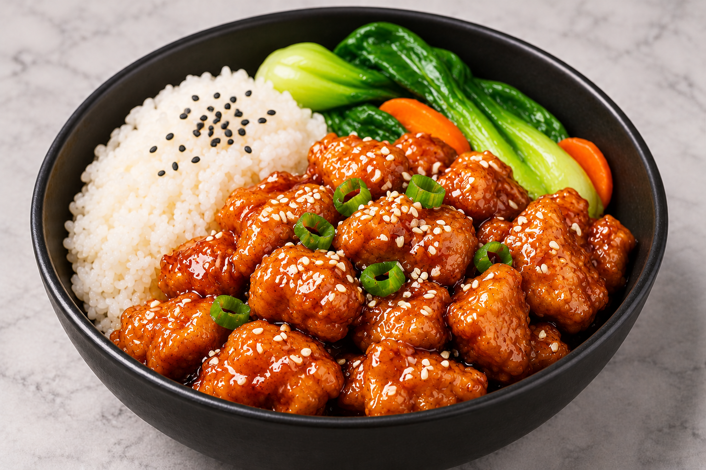
General Tso’s Chicken Rice
左宗棠鸡饭
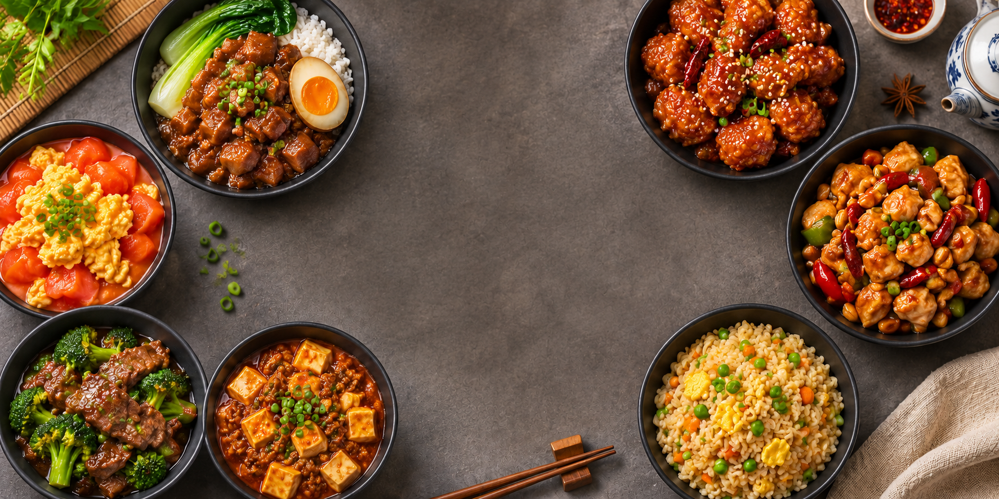
Fresh Chinese meals for Waterloo Region — we're listening.
We're researching local demand before we launch. Tell us which meals, prices and delivery options work for you. Take our short survey and share your suggestions.
Proposed plans from C$25 / Day
2 meals per day · Not taking orders or payments yet
Ideas or questions? 19707088279jia@gmail.com
Chef-crafted, macro-balanced, made fresh daily

左宗棠鸡饭
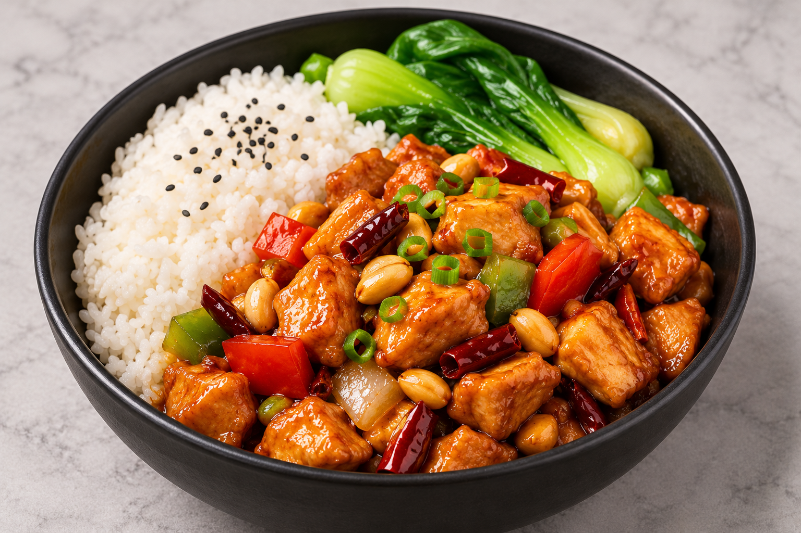
宫保鸡丁饭
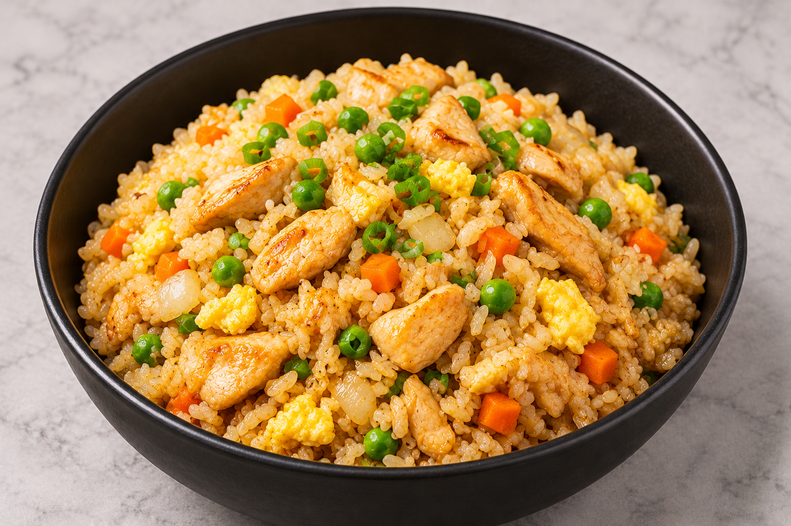
鸡肉炒饭
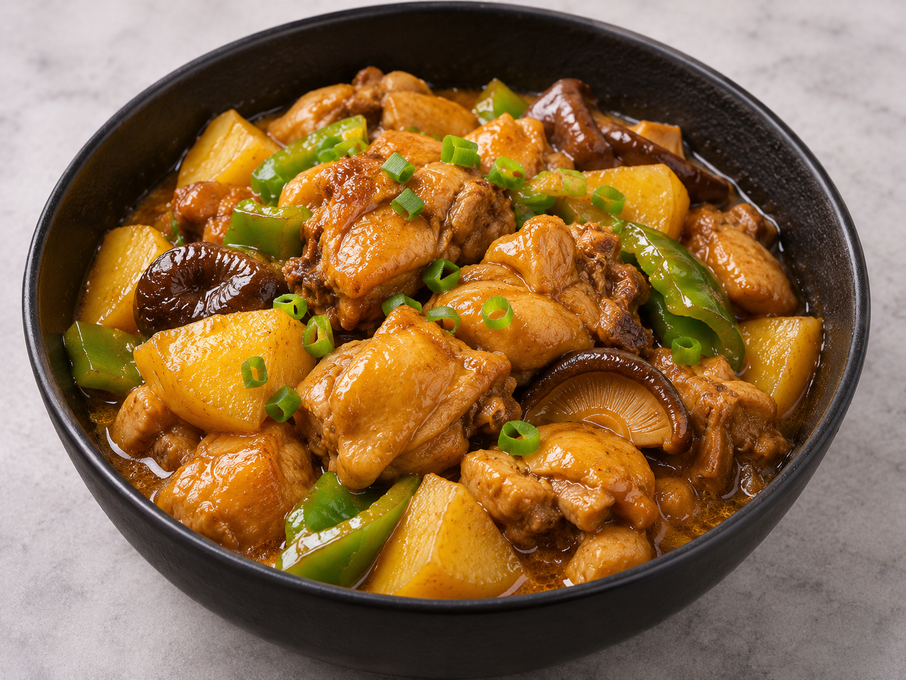
黄焖鸡米饭
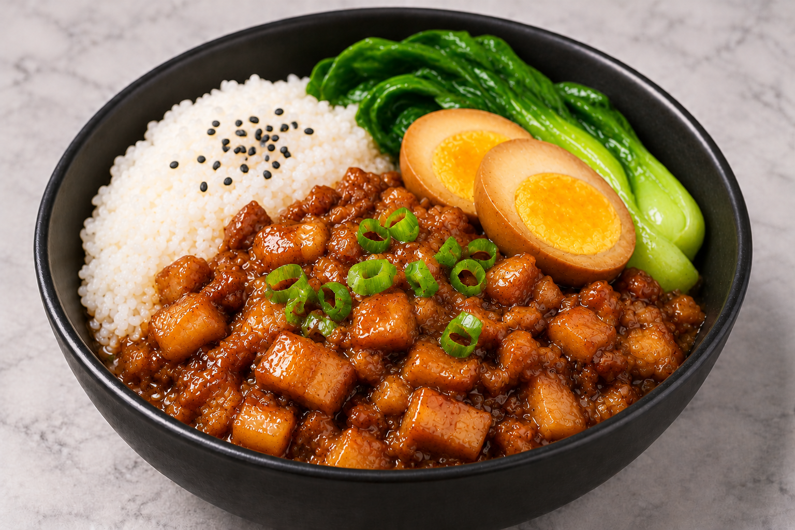
卤肉饭
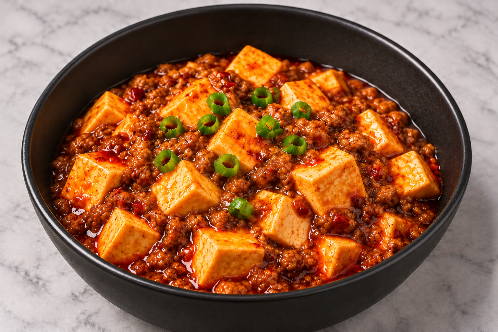
麻婆豆腐饭
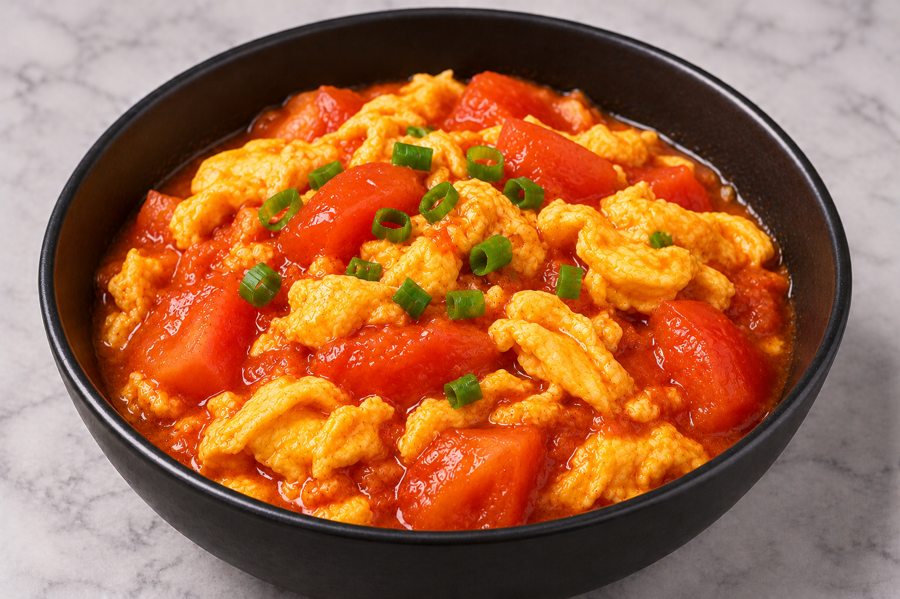
番茄炒蛋饭
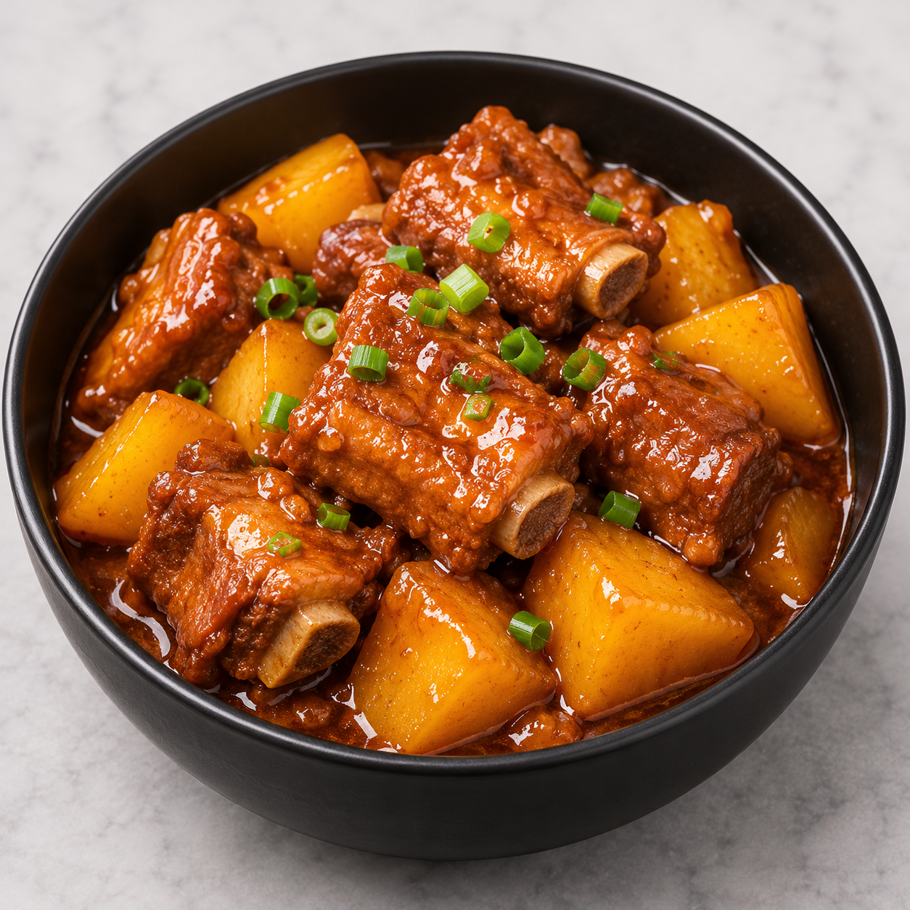
土豆排骨饭
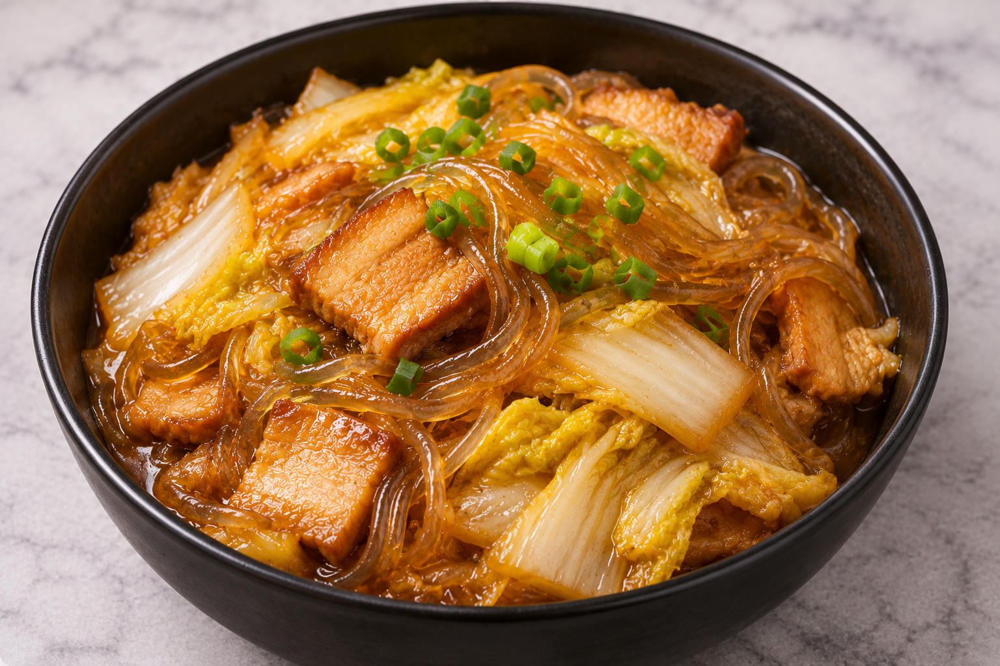
猪肉白菜炖粉条
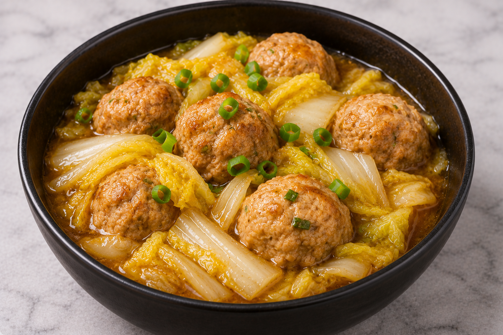
白菜炖肉丸饭
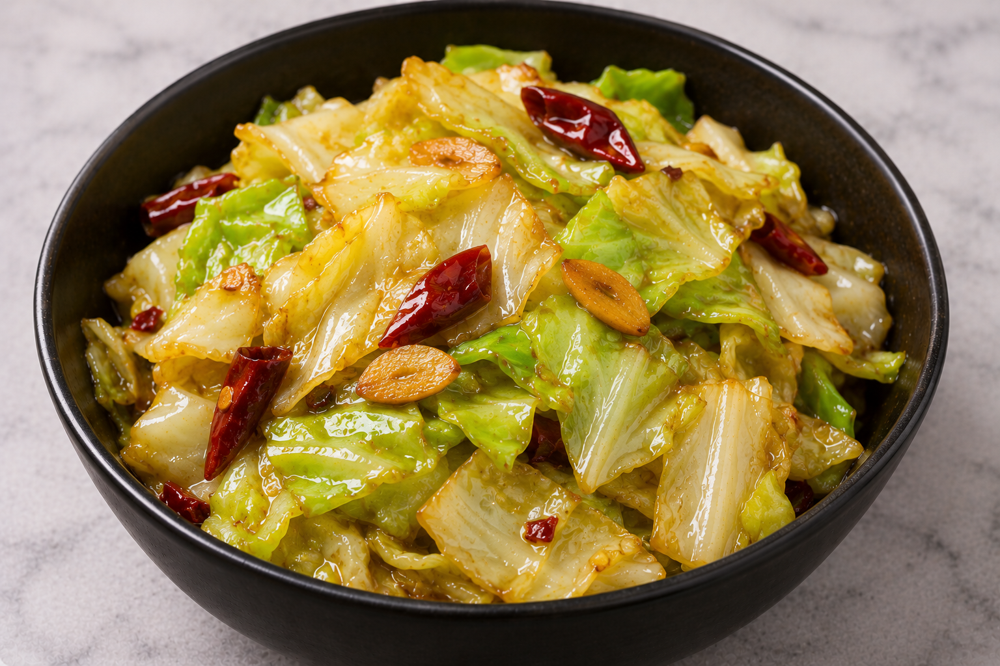
手撕包菜饭
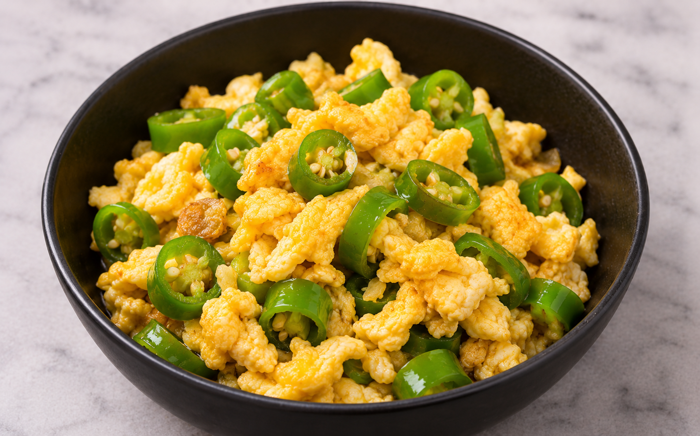
青椒炒蛋饭
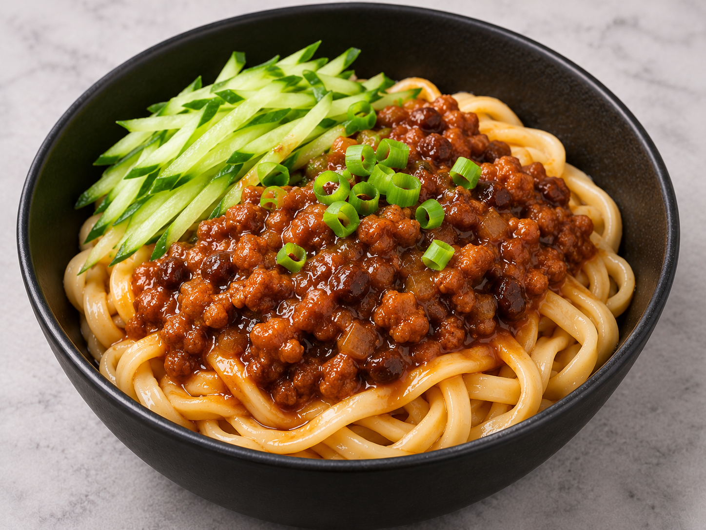
肉末炸酱面
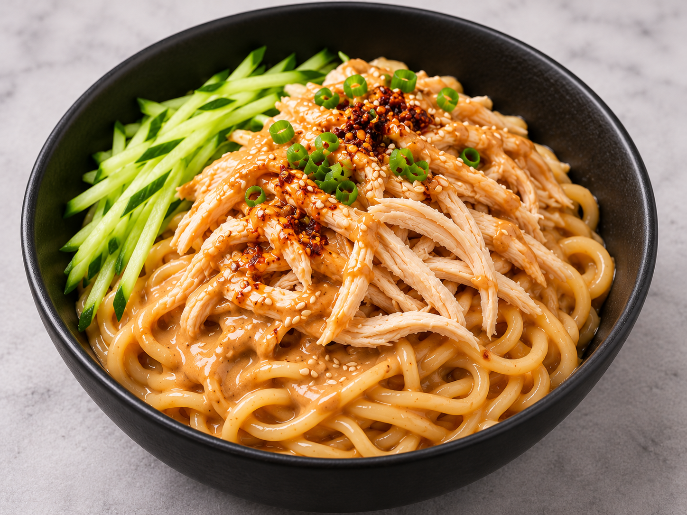
麻酱鸡丝拌面
Explore 14 featured dishes today.
We're planning a menu of
30 Chinese Meals
for our official launch.
Two meal plans we're considering for our launch.
Balanced daily meals for simple, healthy eating.
C$25 / day
Proposed Launch Plan
Tailored meals built around your goals and preferences.
C$60 / day
Planned Premium Option
Proposed plans and pricing — subject to change before launch.
We're exploring local demand for fresh Chinese meal delivery in Waterloo Region. Your feedback will help us decide what to offer.
Your feedback is sent through FormSubmit. If it cannot connect, your answers will stay here.
Your answers, optional suggestions, submission time and advertising source parameters are sent through FormSubmit to Eastern Bowl for demand research. Your email and launch-update consent are recorded separately; email is optional and is sent only with your consent. Feedback does not place an order or authorize payment.
Source parameters may include UTM campaign tags and advertising click IDs in this page's address. We do not send unrelated URL parameters or your full browsing history. No survey answers or email addresses are saved in this browser. For questions, suggestions, data deletion or to withdraw email consent, contact 19707088279jia@gmail.com.
FormSubmit processes submissions under its privacy policy.